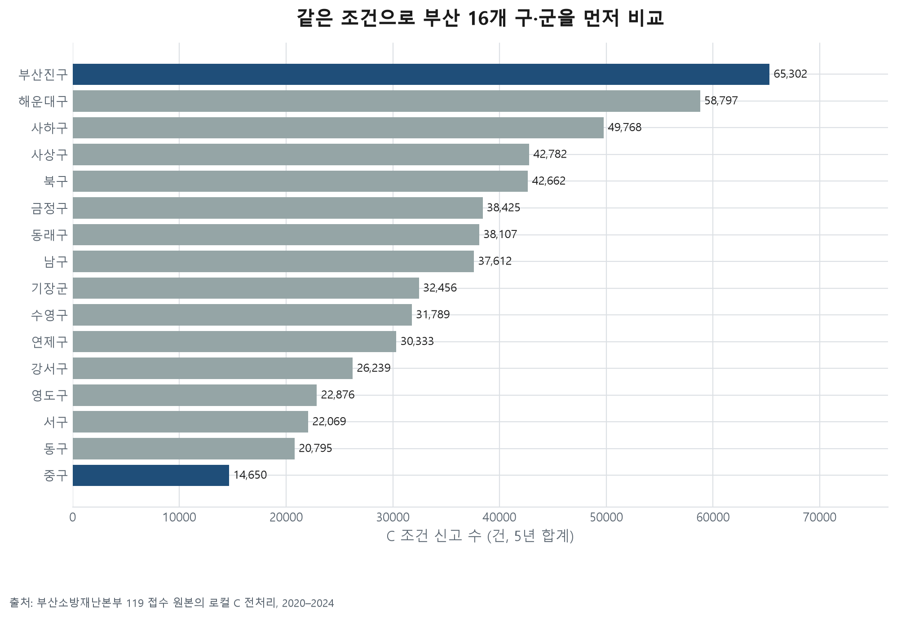
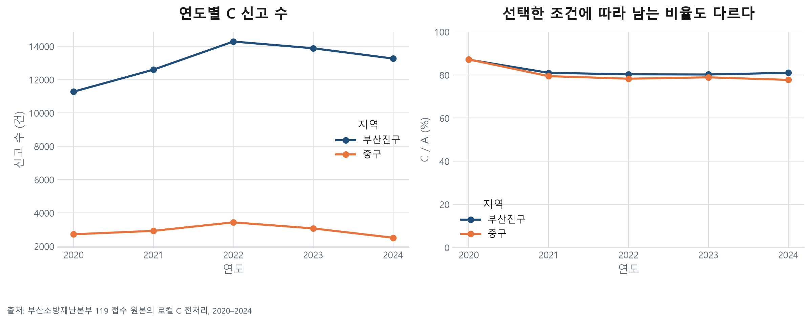
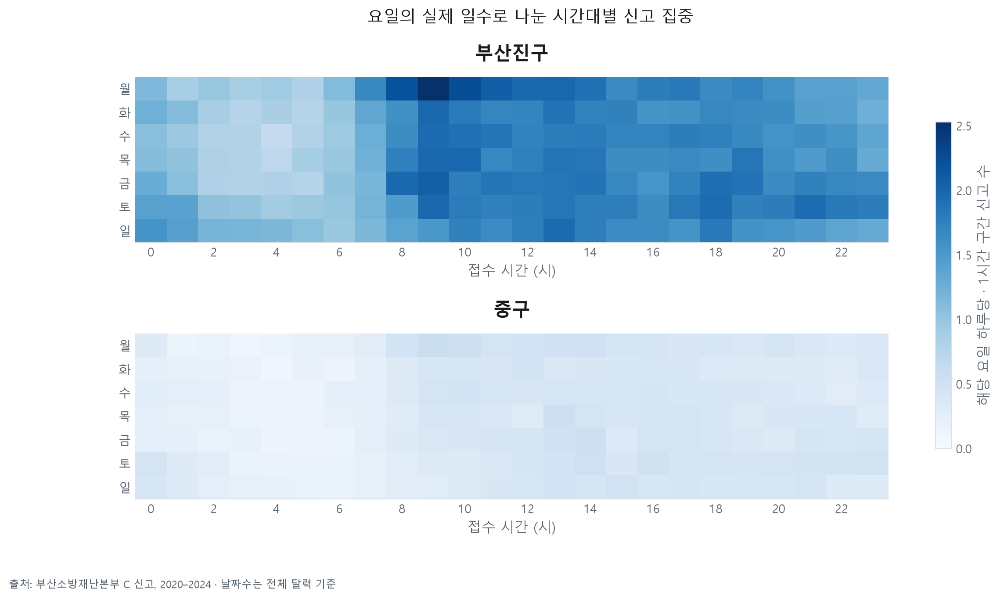
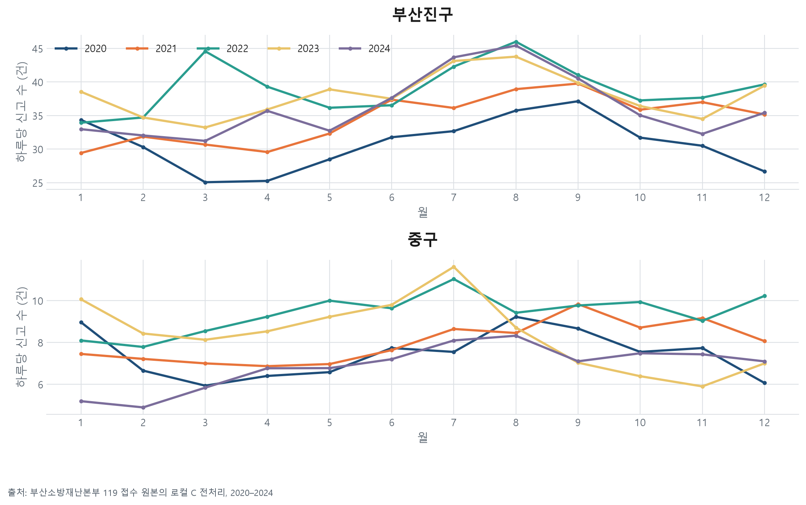
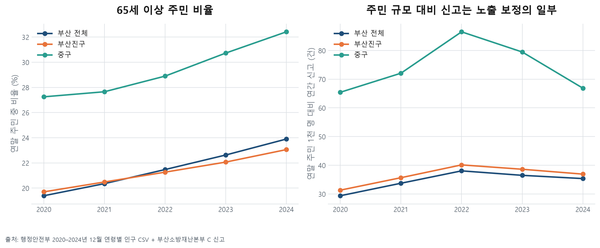
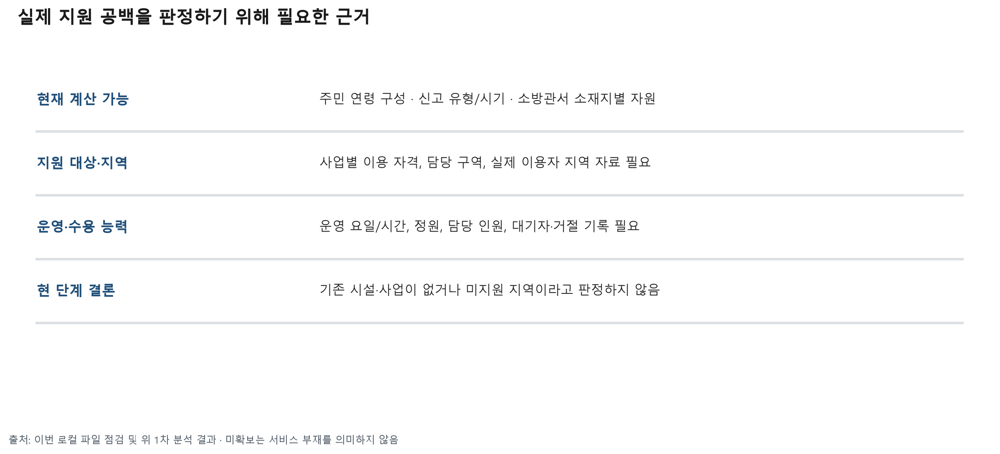
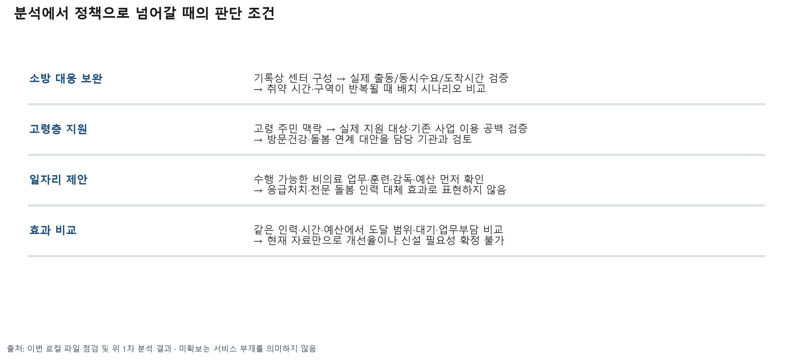

02_신고유형_구성
각 구의 C 신고 전체가 분모다. 세부 유형별 원표도 함께 제공한다.

2020–2024 · C 조건 574,662건에서 두 구 분석
8개 축, 그림 12개. 접근성과 실제 지원범위는 추가 원본이 필요하며 현재 그림은 사전 진단과 근거 공백을 보여줍니다.
선정한 두 구를 부산 전체의 같은 C 조건과 비교한다. 출동·피해자 수가 아니다.

각 구의 C 신고 전체가 분모다. 세부 유형별 원표도 함께 제공한다.
A도 이미 선택 17개 결측 제외 후 자료다. 전체 원신고를 대표한다고 단정하지 않는다.

같은 색 눈금. 해당 요일 일수로 나눠 요일 횟수 차이를 보정했다.

월 길이를 보정하고 연도를 분리한다. 반복적 계절성의 통계적 입증은 아직 하지 않았다.

원문 동명 집계다. 행정동 경계·인구와 결합하지 않았다. 여러 행정동에 걸친 동명을 임의 분배하지 않는다.

센터 수·인원·차량은 서로 다른 단위다. 기준일·교대인원·관할범위 미확인으로 부족 판정은 보류한다.

접근성 축의 사전 진단이다. PLCSCN_CNTR_NM 기록은 실제 출동·도착시간·센터별 업무량을 보장하지 않는다. 도로망·출동시각·도착시각·당시 가용인원 확보 전 접근성 판정 보류.

구 코드와 연도를 고정해 연결했다. 신고자의 나이를 뜻하지 않으며 유동인구·방문객 노출이 반영되지 않은 비율이다.

겹치지 않는 연령 구간. 고령 주민 수를 고령 신고 수·독거·고독사 위험으로 바꾸지 않는다.

지원범위 축은 데이터 확보 현황의 시각화다. 실제 서비스 커버리지 분석은 미완료다.

정책 방향은 검증할 가설이다. 특정 정책의 효과나 기관 업무 근거를 이번 분석에서 확정하지 않았다.
